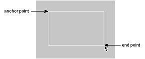

Release 3.3 Copyright ©1995 by NeXT Computer, Inc. All Rights Reserved.
| 3 |
User Actions: The Keyboard and Mouse
| Users give instructions to the computer through their actions on the mouse (or a comparable pointing device) and keyboard.
In general, the keyboard is needed only to enter text. The mouse is used for all other operations, such as using controls and making selections. However, for the user's convenience, many operations can also be accomplished using the keyboard. The keyboard is also the only way to access certain computerwide functionality, such as turning the power on and off. |
| How the Keyboard and Mouse Work |
| This section describes how the keyboard and mouse are used in NEXTSTEP. It also describes how the user can make selections using the mouse and keyboard.
The Keyboard |
| A NEXTSTEP keyboard resembles a conventional typewriter, with the usual keys in their traditional locations. However, the keyboard also has many keys that aren't found on typewriters, including the Command, Alternate, Control, and Help keys and a set of keys arranged in a calculator-style numeric keypad. The behavior of each key is documented in the User's Guide. Behavior that plays an important role in the user interface is discussed below.
Modifier Keys The keyboard's Shift, Command, Alternate, Control, and Help keys are modifier keys: They change the effect of a keyboard or mouse action. For example, Shift-3 yields #, and Command-c issues a Copy command. Unlike character keys, modifier keys by themselves don't generate characters. To use a modifier key, the user must hold the key down and, while keeping it down, press the key (or perform the mouse action) to be modified. More than one modifier key may be used at a time--for example, Command-Shift-C. The modifier keys and their effects when used with other keys are presented below. |
| The Shift key modifies keystrokes to produce the uppercase character on letter keys and the upper character on two-character keys. | ||
| The Alternate key modifies keystrokes to produce an alternate character to the one that appears on the key. In general, these are special characters that are used relatively infrequently. To find out which alternate characters are generated by which keys, see the User's Guide. | ||
| The Control key modifies keystrokes to produce standard ASCII control characters. Some control characters are generated by single character keys--for example, Tab is Control-i, Return is Control-m, and backspace (Shift-Delete) is the same as Control-h. | ||
| The Command key provides a way of choosing commands with the keyboard rather than the mouse. As an alternative to clicking a menu command with the mouse, the user can press the Command key in conjunction with the character displayed in the menu next to that command. For example, Command-c chooses the Copy command. | ||
| The Help key doesn't modify keystrokes. It's used only to modify mouse actions, as described in "Using Modifier Keys with the Mouse" in this chapter. |
| Keyboard Alternatives
A graphical user interface is easy for most people to learn and remember. Objects have a familiar look on the screen and behave in a way that's reminiscent of the real-world objects they emulate. However, many users find it faster and easier to operate graphical objects using the keyboard rather than the mouse. For this reason, it's often appropriate to provide keyboard alternatives to the mouse, at least for common operations. |
| Programming Note: The Keyboard
For most applications, keyboard input is handled automatically. Text entry and display are handled by the Application Kit Text object, and keyboard alternatives are automatically converted into clicks on their associated control. All you have to do is choose the keyboard alternatives (as discussed later in this chapter) and specify them in Interface BuilderTM. You'll need to handle keyboard input if your application doesn't use the Text object for its text entry. |
| Keyboard alternatives consist of a single keystroke, modified by the Command key (and possibly another modifier key). The Command key is required so that keystrokes that make something happen (give commands) are clearly separated from those that enter data (cause typing to appear).
Keyboard alternatives are most often used for menu commands, although they're permitted in a panel's buttons and pull-down lists, as well. Although keyboard alternatives are tied to a graphic representation, they don't require the representation to be on-screen. Keyboard alternatives for menu commands and panel buttons work even if the menu or panel is hidden.
The Mouse The mouse controls the movement of the cursor on-screen. Typically, the user moves the cursor over an object in the workspace and presses a mouse button to make something happen. With the mouse, the user can edit documents, rearrange windows, and operate any control. The mouse is the essential tool of a graphical interface. Users can manipulate the mouse in just two ways: |
| Move it to position the cursor. The standard arrow cursor "points to" the object touched by its tip. (The cursor is also said to be positioned "over" the object at its tip.) | ||
| Press and release the mouse buttons. The NeXTTMmouse has two buttons, one on the right and one on the left. Initially, both buttons work alike, but they can be differentiated by the Preferences application (see "Left and Right Orientation" later in this chapter). |
| From these two simple actions, a few basic mouse operations are derived: |
| Clicking | ||
| Multiple-clicking | ||
| Dragging | ||
| Pressing |
| Clicking
The user clicks an object by positioning the cursor over it, then pressing and releasing a mouse button. Usually the mouse isn't moved during a click, and the mouse button is quickly released after it's pressed. However, timing generally isn't important. What's important is what object the cursor is over when the mouse button is pressed and released. Clicking is used to pick an object or a location on the screen. If the object is a window, the click brings it to the front and may select it to receive characters from the keyboard. If the object is a menu command, button, or other control, the click performs the control's action. In text, a click selects the insertion point (the place where the user's typing will be entered). In a graphics editor, it may select the location for a Paste command.
Multiple-Clicking The user double-clicks an object by positioning the cursor over it, then quickly pressing and releasing a mouse button twice in succession. The mouse button must be pressed the second time within a short interval of the first, or the action will count as two successive clicks rather than a double-click. In addition, the cursor can't move significantly during the interval. This is to guarantee that the double-click remains focused on a single location on-screen. With the Preferences application, users can set the maximum length of the time interval between clicks to suit their individual needs. The user triple-clicks an object by rapidly pressing and releasing a mouse button three times in succession. The time interval between successive clicks and the distance the cursor can move between the first and the last click are subject to the same constraints that apply to a double-click. |
| Programming Note: The Mouse
All the controls provided by the Application Kit automatically turn the mouse actions they recognize (such as clicks) into the result specified by the programmer (such as bringing up a panel). The Text object also automatically receives and reacts to mouse actions such as clicks, double-clicks, triple-clicks, and dragging actions. If you implement a custom control or a custom content area, you'll probably have to write code to handle the mouse actions that the control or area responds to. |
| Dragging
The user drags by pressing a mouse button and moving the mouse (and cursor) while the button is down. In general, every dragging action implies a click. Dragging a window, for example, also brings it to the front, as if it had been clicked. However, sometimes it's appropriate to separate an object's response to dragging from its response to clicking. See "When Dragging Shouldn't Imply Clicking," later in this chapter, for information on when dragging should not imply a click.
Pressing The user presses an object on-screen by positioning the cursor over it, pressing a mouse button, and holding the button down for a period of time. Although pressing implies clicking (since the mouse button must be released sometime), an object is said to be pressed rather than clicked if releasing the mouse button too soon would cut the action short. Control objects that respond to pressing act immediately when the mouse button is pressed. They don't wait for the button to go up.
Mouse Responsiveness The cursor moves on-screen when the user moves the mouse, but the ratio of the two movements isn't one-to-one. Rapid mouse movements move the cursor farther than slow ones. Users can set the mouse scaling, how responsive the cursor is to mouse movements at different speeds, with the Preferences application.
Left and Right Orientation To start, the two buttons of the mouse work identically: Either button can be used for the ordinary operations of clicking, dragging, and pressing. The two buttons can be differentiated with the Preferences application. Users can enable one of the buttons, either the right or the left, for the special function of bringing the main menu to the cursor. (See "Bringing the Main Menu to the Cursor" in Chapter 6, "Menus," for details.) Thereafter, the enabled button has only that function, and it can't be used for ordinary mouse operations. This leaves the other button as the one that will be primarily used.
Selection Users select graphical objects by clicking and dragging with the mouse. A variety of objects can be selected, including: |
| Windows | ||
| Tools in a palette | ||
| Cells in a matrix or fields in a form | ||
| Icons in a file viewer | ||
| Items in a list (of files or mail messages, for example) | ||
| Characters in editable text | ||
| Graphical elements of editable artwork |
| Selecting an object simply picks it out and distinguishes it from others of the same type. It doesn't change the object in any way. Most selections pick out targets for subsequent actions in the targeted-action paradigm.
If users are allowed to insert new material into a display, they can select not only objects already displayed, but also locations for the insertions. For example, it's possible to select either characters that have already been typed into a text field or the point where new typing should appear. This section concentrates on how selections are made in editable material, but the rules often carry over to other types of selection as well.
Dragging to Select Dragging selects everything in the range defined by the anchor point (where the cursor was located when the mouse button was pressed) and the end point (the cursor's location when the mouse button is released). What "everything in the range" means depends on the type of material selected, as described in "The Range that Dragging Should Select," later in this chapter. |
| Programming Note: Selection
The Text object and browser implementation in the Application Kit both provide almost all the selection mechanisms described in "Selection." (The exception: The Text object doesn't implement discontinuous selection.) However, if you define your own selectable data, you'll have to implement selection yourself. |
| Clicking to Select
If the anchor point and end point are substantially the same--as they are for a click--the user's action may sometimes select the item under the cursor and sometimes simply select that location. In a graphics editor, for example, a click can select an existing figure or a location to insert a new one. In text, a click always selects a location--an insertion point--where characters can be entered from the keyboard. The insertion point is normally marked by a blinking vertical bar located between characters. If the user clicks on top of a character, the insertion point is adjusted to the nearest character boundary. Clicking in a margin, or in an empty area away from any text, puts the insertion point next to the nearest character in series.
Multiple-Clicking to Select Although a single click selects only an insertion point in text, multiple-clicking selects characters already inserted. A multiple-click always selects a linguistically meaningful unit. Normally, double-clicking selects a word, and triple-clicking selects a paragraph (all the text between return characters). If the user drags from a multiple-click, additional units of the same type are selected. For example, double-clicking a word selects the word; dragging from the double-click then selects every other word that's even partially within the range defined by the anchor and end points.
Extending the Selection Normally, as soon as users commit themselves to a new selection by pressing a mouse button (to begin clicking or dragging), the current selection is canceled in favor of the new one. However, when the Alternate or Shift key is held down, the current selection is extended, not canceled.
Continuous Extension Clicking and dragging with the Alternate key down results in a new selection that's a continuation of the previous one. The new selection includes the previous selection and everything lying between it and the location of the cursor when the user releases the mouse button. The Alternate key is thus an alternative to dragging as a way of selecting a range--the user can click to establish an anchor point, hold down the Alternate key, and click again to determine the end point. If the previous selection is already a range, Alternate-clicking and Alternate-dragging move the edge of selection that's closest to the cursor when the mouse button goes down to the cursor's location when the mouse button goes up. The Alternate key thus also provides a way of adjusting the boundaries of the previous selection. Alternate-clicking outside a selected range extends the range to the point of the click. Alternate-clicking inside a selected range repositions the closest edge of the selection to the point of the click. |
| If the current selection is the result of a multiple-click, the Alternate key extends it just as dragging would. Double-clicking a word, holding the Alternate key down, and clicking another word elsewhere in the text extends the selection to include both words and all those between.
Discontinuous Extension The Shift key lets users add to, or subtract from, the current selection. Additions don't have to be continuations of the current selection, so discontinuous selections can result. Note: Discontinuous selection is common for editable graphics, icons, and items arranged in a list. It usually isn't implemented for normal text. To add to the selection, the user clicks and drags as usual while holding the Shift key down. New material is selected, but the previous selection also remains. This is illustrated in the middle column of the following figure. |
| To subtract from the selection, the user holds the Shift key down while clicking or dragging over the current selection. Shift-clicking and Shift-dragging deselect material that's already been selected. While keeping the Shift key down, the user can first select material, then deselect it, then select it again.
Shift-dragging either selects or deselects; it never does both. Which it does depends on the item under the cursor when the mouse button goes down: |
| If the item isn't currently part of the selection, Shift-dragging serves to select it and everything the user drags over. It won't deselect material that happens already to be selected. | ||
| If the item is currently selected, Shift-dragging deselects it and any other selected material that's dragged over. It won't add unselected material to the selection. |
| How the Arrow Keys Affect a Text Selection
In text, the keyboard's arrow keys are used to position the insertion point or, when modified by the Alternate key, alter the selection. But unlike the mouse, which can select anywhere within a document, the arrow keys operate only relative to the current selection. The descriptions below assume that the current selection, before the user touches an arrow key, is a range of text. The simpler case where the current selection is not a range but an insertion point is not directly addressed, but can easily be derived from the descriptions given. Note: The arrow keys have nothing to do with the cursor, which is controlled only by the user's mouse movements. When used alone (without a modifier key), the left arrow key positions the insertion point one character before the beginning of the current selection. The right arrow key puts the insertion point one character beyond the end of the current selection. These keys move the insertion point to the previous or next line if necessary. The up arrow key puts the insertion point one line above the beginning of the current selection, and the down arrow key puts it one line below the end of the current selection. As the up and down arrow keys move it from line to line, the insertion point maintains the same approximate distance from the left margin. It falls at the end of any line that's shorter than that distance, but comes back out to the original distance when a line that's long enough is encountered. More information on handling the arrow keys is in "Implementing Special Keys" in this chapter. Modified arrow keys--for example, Alternate-arrow--are discussed in "Implementing the Modified Arrow Keys," later in this chapter. |
| Implementing Special Keys |
| This section describes how your application should handle certain special keys and key combinations, including keyboard alternatives.
Special Character Keys Several special character keys, listed below, generate characters that typically perform a function--the character causes the application to make something happen. Exactly what happens depends on the application. Some typical functions are mentioned here. |
| The Return key moves the insertion point or prompt to the beginning of the next line, much like the carriage return of a typewriter. When data is entered in a text field or form, Return informs the application that the data is ready for processing. | ||
| The Enter key, like Return, signals that data is ready for processing. It need not move an insertion point or prompt to the beginning of the next line. (Enter can also be generated with Command-Return.) | ||
| The Delete key removes the preceding character in text or deletes the current selection. Shift-Delete generates the backspace character, which moves the insertion point back one character. In most applications, backspace performs the same functions as Delete. | ||
| The Tab key moves forward to the next tab stop, or to the next text field in sequence. Shift-Tab moves backward to the previous tab stop or text field. | ||
| The arrow keys move the symbol that's used in some contexts to track where the user is writing or entering data--for example, the insertion point in a document processor. The arrow keys' behavior is described in "How the Arrow Keys Affect a Text Selection," earlier in this chapter, and in "Implementing the Modified Arrow Keys," later in this chapter. |
| For UNIX®compatibility, the Esc key is used to complete file names (as described in the following section). It should not be used any other way in the user interface.
Handling Arrow Characters Because the arrow keys generate the same character codes as the Symbol font's arrow characters, text objects should check which key generated the character. The arrow keys never produce visible arrow characters. However, when a nonarrow key (perhaps modified by the Alternate key) produces an arrow character code, it should produce visible arrow characters, and not result in arrow key functionality. For example, Alternate-F should produce a visible left arrow symbol, as shown in the User's Guide, instead of moving the insertion point left one character.
Special Command-Key Combinations A handful of Command-key combinations produce special effects. Some play a particular role in the user interface. Others, in effect, give commands to the computer itself, rather than to just one application. They can't be used for other functions than those listed below. |
| Command-. (period) should let users abort the current operation in the active application. Although the Application Kit has code to support Command-., it isn't automatic. An application must ask for this functionality | ||
| Command-space should be used for file name completion. In contexts where it's appropriate for the user to type a file name (such as in an Open panel), Command-space displays as many characters as match all possible file names in the directory. If the user first types enough characters to identify a particular file and then presses the space bar with the Command key down, the remaining characters of the file name are filled in. (In many applications, the Esc key also performs file name completion.) | ||
| On keyboards that have no Caps Lock key, Command-Shift is the equivalent of Caps Lock (but only if the Shift key is released before another key is pressed). | ||
| Command-Return is the same as Enter. | ||
| Command-volume down turns the speaker off and on. (Volume down is a system control key on NeXT keyboards.) | ||
| Command-Left Alternate-~, produced by holding the Command key and the leftmost Alternate key and pressing the ~ key, generates an NMI (nonmaskable interrupt) on systems that have only one Command key. An NMI brings up the NMI mini-monitor window. | ||
| Command-Command-~ generates an NMI on systems that have two Command keys. | ||
| Command-~, produced with just the right Command key for keyboards that have two Command keys, displays a panel that gives the user the option of restarting the computer, turning the power off, or canceling the command. | ||
| Command-Alternate-*, produced by pressing the Command and Alternate keys at the lower left of the keyboard in conjunction with the * key on the numeric keypad, performs a reset to reboot the machine. The reset is immediate: No panel or monitor gives the user the option of canceling the instruction. |
| Note: These Command-key combinations aren't keyboard alternatives, since they don't correspond to any on-screen object.
Choosing Keyboard Alternatives Initially, until the user specifies a different preference, applications should follow the guidelines for keyboard alternatives described in this section. Users can use the Preferences application to alter the keyboard alternatives for every application at once. You're also encouraged to let the user choose and change keyboard alternatives using your application's Preferences panel. The guidelines place keyboard alternatives into three groups--reserved, required, and recommended. These groups are listed in the tables that follow along with the commands they perform and the menus where the commands are located. (See "Standard Menus and Commands" in Chapter 6 for more information on the listed commands and menus.)
Reserved Keyboard Alternatives Reserved keyboard alternatives must be used for the commands that follow, and cannot be used for any others. If your application implements the functionality that a command represents, it must provide both the command and the keyboard alternative. For example, if your application opens files, it must have an Open command with Command-o as the keyboard alternative. If your application doesn't allow the user to open files, it won't have an Open command and must not use Command-o as a keyboard alternative. |
| Keyboard Alternative | Command | Menu | |
| Command-? | Help | Info menu | |
| Command-a | Select All | Edit menu | |
| Command-c | Copy | Edit menu | |
| Command-h | Hide | main menu | |
| Command-n | New | Document menu | |
| Command-o | Open | Document menu | |
| Command-p | main menu | ||
| Command-q | Quit | main menu | |
| Command-s | Save | Document menu | |
| Command-v | Paste | Edit menu | |
| Command-w | Close Window | Windows menu | |
| Command-x | Cut | Edit menu | |
| Command-z | Undo | Edit menu |
| Required Keyboard Alternatives
These keyboard alternatives must be used if the application implements the command. For example, if your application has a Find panel, you must provide Command-f as a way of bringing the panel up. However, if an application doesn't implement the particular functionality of an item (if it doesn't have a Find panel, for example), it can use the keyboard alternative (Command-f) for something else. Nevertheless, to preserve interapplication consistency, it's strongly recommended that you first try to use characters that don't overlap with those on this list. |
| Keyboard Alternative | Command | Menu | |
| Command-= | Define in Webster | Services menu | |
| Command-; | Check Spelling | Edit menu | |
| Command-b | Bold (Unbold) | Font menu | |
| Command-d | Find Previous | Find menu | |
| Command-e | Enter Selection | Find menu | |
| Command-f | Find Panel | Find menu | |
| Command-g | Find Next | Find menu | |
| Command-i | Italic (Unitalic) | Font menu | |
| Command-t | Font Panel | Font menu | |
| Command-C | Colors | varies |
| Recommended Keyboard Alternatives
These keyboard alternatives must be used for a command if the command has a keyboard alternative. If not, the key can be used for some other command. For example, if the Copy Ruler command has no keyboard alternative, Command-1 can be used as a keyboard alternative for another command. |
| Keyboard Alternative | Command | Menu | |
| Command-1 | Copy Ruler | Text menu | |
| Command-2 | Paste Ruler | Text menu | |
| Command-3 | Copy Font | Font menu | |
| Command-4 | Paste Font | Font menu | |
| Command-j | Jump to Selection | Find menu | |
| Command-m | Miniaturize Window | Windows menu | |
| Command-r | Show Ruler | Text menu | |
| Command-P | Page Layout | Format menu | |
| Command-S | Save As | Document menu | |
| Command-V | Paste and Link | Link |
| Creating Application-Specific Keyboard Alternatives
The NEXTSTEP user interface is visual, so all operations--all menu commands and scrolling operations, for example--have a graphical representation on-screen and can be performed using the mouse. Keyboard alternatives are just that: alternatives. They should never be used for operations that can't be performed using the mouse. The main consideration in deciding which operations should have keyboard alternatives is frequency of use. It's better to assign a keyboard alternative to a frequently used command than to one that's used less often. Infrequently used commands--such as the Info Panel command--should never be assigned keyboard alternatives. Keyboard alternatives are allowed only for the commands in a menu, the buttons in a panel, or the items in a pull-down list. The characters used as keyboard alternatives must be displayed to the user in the menu, panel, or list. Menus put them on the commands themselves, and pull-down lists follow this example. A panel can present the keyboard alternatives for its buttons in any way that's appropriate to the design of the panel. It's usually a good idea to assign keyboard alternatives to commands that are needed while working on the keyboard (for example, the commands in the Find menu). The keyboard alternative frees users from having to switch their attention from the keyboard to the mouse and back again. You can also use keyboard alternatives to enable proficient users to work with one hand on the keyboard and the other on the mouse. For example, Command-x, Command-c, and Command-v allow users to select with the mouse while carrying out cut, copy, and paste operations from the keyboard. These keyboard alternatives free users from having to move the cursor out of the region where they're working just to click a command. If keyboard alternatives are assigned to any in a set of parallel commands for formatting or viewing data (for example, commands that sort a list of items in various ways), the command that restores the default should also be assigned a keyboard alternative. The keyboard can then take the user to an alternative format and back to the default, rather than just half way. Note: You don't need to assign a keyboard alternative to every command. Remember that users can create their own global keyboard alternatives by using the Preferences application.
Choosing the Character Any character except period (.) and space can be used in a keyboard alternative. If the character is a letter, it can be either uppercase or lowercase, although lowercase characters are preferred because they don't require the user to press two modifier keys (Shift and Command) at once. When choosing the character for a keyboard alternative, try to make it mnemonic. If possible, it should be the first letter of the command it performs. If it's closely related to a command that already has a keyboard alternative, then you might want to choose a character physically near the existing one. For example, the Find command's keyboard alternative is Command-f, taken from the first letter of the command. The Find command has two related commands: Find Next and Find Previous. The Find Next command's keyboard alternative (Command-g) was chosen because it's just to the right of the Find command's keyboard alternative. Similarly, the Find Previous command's keyboard alternative (Command-d) is just to the left.
Using the Alternate Key If necessary, your application can use the Alternate key with the Command key for keyboard alternatives. Using the Alternate key is not desirable. You should first exhaust all reasonable possibilities using the Command key alone or in combination with the Shift key before resorting to the Alternate key. But, when necessary, a keyboard alternative requiring the Alternate key can be used. It should be displayed in italic. |
| The character displayed in italic is the one that would be typed if the Command and Alternate keys were not held down, not the character that's produced when the Alternate key is held down.
Note: Recognizing keyboard alternatives produced with the Alternate key is difficult to implement, and the meaning of italic characters in menus isn't explained in the NEXTSTEP user documentation. If you nevertheless choose to implement keyboard alternatives with the Alternate key, make sure that the documentation for your application explains the meaning of the italicized character.
Determining the Action that Is Performed A keyboard alternative should almost always accomplish exactly the same thing as the mouse action. Even slight variations between a mouse action and its keyboard alternative run counter to the principle that every keyboard operation must match a corresponding mouse operation. However, in some cases it's acceptable to have a keyboard alternative do just a bit more than the mouse operation. These cases are rare and often go unnoticed by users because the difference is both subtle and intuitive. The keyboard alternative simply does what the user wants, while also doing one or both of the following: |
| Reducing the number of clicks or keystrokes the user needs to perform | ||
| Eliminating the need to switch from the keyboard to the mouse and back again |
| For example, the Edit application has a Find panel that's brought up by the Find Panel menu command or its Command-f keyboard alternative. Usually, the panel stays up until the user explicitly closes it, since it can be used many times in a row. However, a user who is concentrating on entering text often wants to find a word in a document but then doesn't want to use the Find panel for a while.
Edit accounts for both kinds of use by automatically closing the panel if the user is not likely to use the Find panel immediately. It assumes that this is the case if the user doesn't use the mouse to conduct the search (instead, using Command-f to bring up the panel, and starting the search by pressing Return). Edit's behavior lets users find a word using a minimum number of actions, and relieves them of having to switch to the mouse to bring the document window back in front of the Find panel. In general, you should start with all keyboard alternatives the same as their associated mouse action. In the rare case when a keyboard alternative should be different from its associated mouse action, the need becomes clear through everyday use. |
| Implementing Mouse Actions |
| This section describes how to implement clicking and dragging for custom controls, application-specific document areas, and other custom objects. You shouldn't need the information in this section if you use only the standard Application Kit objects.
Reacting to Clicking When the user clicks an object on-screen, the object should provide immediate graphic feedback to the user when the mouse button goes down. However, depending on the intent of the click, the object may wait for the mouse button to go back up before doing anything more: |
| If the click is intended to initiate a targeted action or choose a tool, then in general the object should act when the mouse button goes up. This gives users an opportunity to change their minds. If they move the cursor away from the object before releasing the button, the action is canceled. Suppose, for example, that a user presses the mouse button while the cursor points to the Cut command in the Edit menu. The command is highlighted, but nothing is cut until the mouse button is released. If the user moves the cursor outside the menu before releasing the mouse button, the command won't be carried out. | ||
| If the click is intended to manipulate the object itself, the object should react immediately when the mouse button goes down. For example, when a window is clicked, it comes to the front of the screen without waiting for the mouse button to go up. Similarly, when editing text, the user is committed to a new selection as soon as the mouse button is pressed. |
| Note: You can implement multiple-clicks so that they act when the mouse button is pressed the second (or third) time, instead of waiting for the mouse button to go back up (as is usual for a single click). This implementation can help improve the perceived speed of your application.
The First Click in a Window Clicking can be used not only to operate an object, but also simply to bring a window forward. When the user clicks in a window that isn't already in front, a question arises concerning intent: Did the user intend the click just to bring the window forward, or was it also intended to do some work within the window? This question is addressed by the following guidelines: |
| If the user chooses a particular control--for example, by clicking a button or clicking in a scroller--the click should not only bring the window forward, but should also operate the control. Since controls are small, it's reasonable to assume that the user chose to click the control, not just the window. | ||
| If the click is just generally within the content area of the window, the click will bring the window forward but shouldn't have any result within the window. Specifically, it shouldn't alter the current selection. |
| However, if the user chooses to double-click within the content area of the window, the normal double-click action should be performed. Double-clicking on a word should select the word whether the window is in front or not.
When Dragging Shouldn't Imply Clicking In general, the main action associated with an object should be initiated on the basis of a single click, and dragging should perform a click. However, sometimes it's inconvenient for dragging to result in the object's action. There are three possible solutions to this problem: |
| Require that a modifier key be pressed when dragging the object | ||
| Implement the object so that dragging it doesn't perform a click | ||
| Have a click do nothing, and have a double-click perform the object's action |
| For the second solution to work (having dragging not perform a click), all of the following must be true: |
| The user gets clear visual feedback as to whether the object is reacting to a click or to dragging, and it's difficult for the user to do the wrong thing. For example, if the user starts to drag the object but then decides to put it back, the action should not be treated as a click. | ||
| The single click's action matches similar uses of a single click elsewhere in the interface. | ||
| The action initiated by the click doesn't have consequences that the user might want to avoid and that can't easily be stopped or reversed. (This condition is imposed because of the increased possibility that the user might erroneously click while intending to drag.) |
| For example, the main action associated with a docked application icon is the activation of the application, but the user can also move the icon by dragging it. Because the user doesn't always want to activate the application when moving its icon, it isn't practical to have both dragging and a single click activate the application.
The first solution listed above (requiring a modifier key when dragging) isn't appropriate in this case. Moving an icon is a basic, obvious operation, and unmodified dragging is the natural way to accomplish it. The second solution (having dragging not perform a click) also doesn't work, mainly because the action (activating an application) has consequences that the user might want to avoid (such as creating windows that cover the user's work) and that can't be reversed until the application is fully started up. Also, having a single click perform the action doesn't match the behavior of application icons in the File Viewer. In the File Viewer, a single click merely selects the application's file. It isn't started up until the user double-clicks it. So the only acceptable solution for docked application icons is for double-clicking to start up the application, while single-clicking does nothing. An example of where dragging doesn't imply a single click is in the File Viewer shelf. When the user clicks the icon of a folder on the shelf, the File Viewer changes to show the folder's path. However, when the user drags the icon off the shelf, the File Viewer does not perform the click's action--it doesn't change the current path. One of the reasons this solution works is that the shelf differentiates clicking from dragging by having a threshold for dragging. Until the user drags the icon a certain amount, it doesn't move. Once the user has committed to dragging the icon, it can't be clicked. The icon also looks very different when it's clicked (it's highlighted) from when it's dragged (it moves, and a dimmed copy is visible in its old location).
When to Use Multiple-Clicking You should use double-clicking only for actions that logically extend the action of a single click, and triple-clicking only for actions that extend a double-click. There are two reasons for this rule, one philosophical, the other programmatic: |
| Complex mouse actions are best remembered and understood when they appear to grow naturally out of simpler actions. | ||
| Every double-click includes a single click (the first click in the sequence), and every triple-click includes a double-click. At the time an application receives one click, it can't know that any others are on their way. So it must first act on the single click, then the double-click, then the triple-click. |
| For example, double-clicking an icon in a Workspace Manager window picks out that icon just as a single click would. It then goes on to open the application associated with the icon. A single click in text selects an insertion point, a double-click extends the selection to a word, and a triple-click extends it further to a full line, sentence, or paragraph.
Quadruple clicks (and above) become increasingly difficult for users to produce or understand. They're neither used nor recommended in the NEXTSTEP user interface. Triple-clicks should be used only sparingly.
Dragging from a Multiple-Click The act of pressing a mouse button to initiate dragging can be part (the last part) of a double-click or triple-click. If the user doesn't immediately release the mouse button and begins dragging at the end of a multiple-click, the dragging action can be assigned a meaning that's related to the meaning of the multiple-click. For example, double-clicking selects a word in editable text, and dragging from a double-click selects additional words within a range of text. If triple-clicking selects a line, dragging from a triple-click will select additional lines within the range.
How to Use Dragging Dragging is used in a variety of situations, principally these three: |
| To move an object, such as a window or the knob of a scroller | ||
| To define a range, usually to select the objects falling within the range | ||
| To slide from one object to another, in order to extend an action initiated in the first object to the second object |
| Moving an Object
The user can drag a movable object by positioning the cursor over it, pressing the mouse button, and moving the mouse while the button is down. The object should move so that it remains aligned with the cursor on-screen. If the object is constrained within a particular area or track--as is a scroller knob, for example--it should remain as closely aligned with the cursor as possible. The Application Kit contains support for moving objects between and within applications. It even changes the cursor to indicate whether the object is being moved, copied, or linked. See "Managing the Cursor," later in this chapter, for more information on changing the cursor.
Defining a Range The user can also drag over an area or through a series of items (such as text characters) to define a range. The position of the cursor when the mouse button is pressed is the anchor point. Its position when the mouse button is released is the end point. The difference between the anchor point and end point determines the area or objects inside the range. Dragging to define a range is mostly used to make a selection (such as a string of text characters or a group of icons) for the targeted-action paradigm. When the user drags to define a rectangular range (as in a drawing program), applications often drag out--or "rubberband"--a rectangle to show the area covered between the anchor point and end point. See "The Range that Dragging Should Select," later in this chapter, for more information on dragging to define a rectangular range. |
|  |
| Sliding from Object to Object
Sometimes, a group of closely related objects reacts to dragging as if the user clicked one of the objects. No matter which object in the group was under the cursor when the mouse button was pressed, the object under the cursor when the mouse button is released is the one that's chosen. (Normally, when an object isn't in a group, it's chosen only when the mouse button is both pressed and released while the cursor is over the object.) For example, a user can choose a menu command by pressing the mouse button as the cursor points to one command and releasing it as it points to another. Users can similarly drag from one tool to another tool when they're displayed together in a palette, or from button to button in a set of radio buttons. The grouped objects don't all have to be of the same type. For example, a user can drag from a button that controls a pop-up list through the list to make a selection, or from a menu command that controls a submenu into the submenu. If the user can drag from one object to another in a group of objects, then this fact should be apparent from the way the objects are displayed. Usually, such objects are displayed in a single row or column, as close to each other as possible. For example, graphical radio buttons should be right up next to each other, to distinguish them from ordinary buttons. (Graphical radio buttons are discussed in detail in Chapter 7, "Controls.")
When to Use Pressing For the most part, pressing is an alternative to repeated clicking. It should be used wherever a control action can be repeated with incremental effect. For example, clicking a scroll button scrolls one line of text, clicking the button again scrolls another line, and so on. Pressing the scroll button scrolls lines repeatedly for a continuous action until the mouse button is released. Pressing is also used to initiate the action of sliding from one object to another. If a button controls a pop-up list, the user presses the button and drags through the list to choose one of its options. After pressing a menu command to bring up a submenu, the user can drag into the submenu.
Using Modifier Keys with the Mouse Applications can choose to assign a different meaning to mouse actions that occur when the user is holding down a modifier key. Modified mouse actions should implement only optional or advanced features of the user interface (because they're harder to remember and require more coordination to produce). They typically extend or alter the effect of the unmodified mouse action. For example: |
| Dragging a file icon from one directory window to another moves or copies the file to the new directory, depending on whether the directories are on the same disk or a different disk. Command-dragging moves the file always. Alternate-dragging copies the file always. Control-dragging is similar to copying, but the new "copy" of the file is simply a link to the old copy. The user can see what's going to happen because the cursor changes (to , for example, when Alternate-dragging). | ||
| Clicking a scroll button scrolls a line of text. Alternate-clicking scrolls a larger amount. | ||
| Dragging a window by its title bar moves the window, brings it to the front, and activates its application. Alternate-dragging moves the window and brings it to the front, but doesn't activate its application. | ||
| Clicking selects a new insertion point in text. Alternate-clicking extends the selection to include everything between the current insertion point and the point of the click. If an application implements discontinuous selection, Shift-clicking selects a new insertion point without dropping the old selection. If discontinuous selection isn't implemented, Shift-clicking acts like Alternate-clicking. | ||
| Clicking selects an icon in a directory window. Shift-clicking adds new icons to the current selection. |
| Note: Caps Lock doesn't work for Shift-clicking or Shift-dragging--the Shift key must be held down manually. This way, users won't find themselves Shift-clicking by mistake when they intend only to click.
The Control key (with no other modifier keys) is often used for mouse actions that create or act on links. If your application's documents can receive linked information, then you need to implement the Control Some modifier keys should be used only in limited circumstances: |
| The Help key should be used only for Help-clicking, which brings up help on the clicked object. | ||
| The combination of Alternate and Control should be used only as a substitute for the Help key. (This is necessary because some keyboards don't have a Help key.) |
| Applications should avoid distinguishing between the left and right key of the Shift, Alternate, and Command pairs. Users don't expect such a distinction except for certain computerwide, potentially destructive operations, such as resetting the computer's processor. Also, there's no hardware-independent way to differentiate the left and right modifier keys. |
| Managing the Cursor |
| Cursor handling is largely handled by the Application Kit. However, your application might need to hide the cursor or change its appearance.
Changing the Cursor An application can change the cursor from the standard arrow (shown above) to any other image of an equal size (16 pixels by 16 pixels). When doing so, it must specify what point in the cursor acts like the tip of the arrow. That point, the cursor's hot spot, should be apparent to the user from the shape of the image. For example, if the cursor is an X, the hot spot would be where the two lines cross. For some types of applications, a shape other than an arrow might be more convenient. For example, an I-beam cursor (shown above) is handier for positioning between characters. Its hot spot is in the center of the beam. It's often a good idea to change the shape of the cursor to indicate that the user has entered a mode. In applications that use the modal-tool paradigm, the cursor should change to indicate which tool has been selected. For example, the cursor might look like a pencil while thin lines are being drawn in a graphics application, or like a wide brush when painting in broad strokes. If mouse actions are valid only in a certain area, the cursor should revert to its normal shape when it leaves the area. It's best not to change the cursor too often, however. To avoid confusing the user, stick with the standard arrow wherever reasonable.
Hiding the Cursor A visible cursor is essential for mouse actions, but it can get in the way when the user is concentrating on using the keyboard. Therefore, the Text object automatically hides the cursor--making it disappear from the screen--when the user begins entering text. A hidden cursor returns to the screen as soon as the user moves the mouse, signaling a shift in attention away from the keyboard back to the mouse. The cursor should also be hidden whenever the user selects an insertion point or a range of text. (This is not currently implemented by the Text object, so each application should do this for itself.) A new selection is a good indication that the user is ready to begin typing again. Hiding the cursor when the user selects a new insertion point avoids confusion between the I-beam cursor and the vertical bar representing the insertion point. Unless it's hidden, the I-beam can obscure the vertical bar. Again, the cursor reappears as soon as the user moves the mouse. |
| Implementing Selection |
| If your application has editable text or allows selection of multiple custom objects, you need to read this section. In particular, even if your application uses the Text object for its editable text areas, you still need to implement the modifier-arrow combinations described in "Implementing the Modified Arrow Keys."
When implementing selection, make sure that your application never moves the selection out of the user's view. If necessary, the display must scroll to make the new selection visible. Of course, the user can choose to move the selection out of view, using a scroller. But as soon as the user makes a new selection, such as by pressing an arrow key, the selection should scroll back into view. |
| Programming Note: Hiding the Cursor
To temporarily hide the cursor, use the single-operator function PSobscurecursor(). |
| When Discontinuous Selection Isn't Implemented
Sometimes an application implements selection for an area but doesn't implement discontinuous selection. In this case, the application should make the Shift key act like the Alternate key during selection, so that both keys cause continuous selection. For example, discontinuous selection is not implemented in the Application Kit Text object, so both Shift-clicking and Alternate-clicking extend the selection continuously. This saves the user from making errors due to pressing the wrong key when trying to extend the selection.
The Range that Dragging Should Select When the user drags a rectangle for the purpose of selection, what is selected depends on the type of material. In serially arranged material--such as characters in connected text--the selection includes the entire series between the anchor and end points. For material consisting of objects that can be independently arranged--such as icons or the graphic elements that make up a picture--the selection generally includes everything that's even partially within the rectangle defined by the anchor and end points. The highlighted material below shows the difference between selection in text and graphics. |
| Implementing the Modified Arrow Keys
Applications that allow text selection are encouraged to implement the modifier-arrow combinations described in this section. Modifier keys alter the basic behavior of the arrow keys, but retain the basic orientation of each of the four keys. Before reading this section, you should understand the existing behavior of the unmodified arrow keys, described in "How the Arrow Keys Affect a Text Selection" earlier in this chapter.
Control-Arrow Combinations Modified by the Control key, the arrow keys move the insertion point to the edge of the current display. The left arrow key puts the insertion point before the first visible character on the line where the current selection begins, and the right arrow key puts it after the last visible character on the line where the current selection ends. The up arrow key positions the insertion point in the first visible line of the display, directly above the beginning of the current selection. The down arrow key puts the insertion point in the last visible line, directly below the end of the current selection. When the insertion point is already at the edge of the currently visible display, the Control-arrow combination that would otherwise move it to that edge first scrolls the display (by the amount of a page scroll), then moves the insertion point to the edge of the new display. Once the insertion point reaches the beginning of a line, the right arrow key won't move it further (for example, to another line). The left arrow key won't move it once it reaches the end of a line.
Shift-Arrow Combinations Modified by the Shift key, the left arrow key positions the insertion point to the left of the current selection at the beginning of a word. The right arrow key positions it to the right of the current selection at the end of a word. Thus both keys move the insertion point from word to word. The up arrow key puts the insertion point at the beginning of the word one line directly above the beginning of the current selection. The down arrow key puts it at the end of the word one line directly below the end of the current selection. As the up and down arrow keys move the insertion point from line to line, they choose words that lie directly above or below the original starting point. (In other words, the location of the insertion point can be calculated by the same rules that determine the edge of the selection when the user double-clicks and drags directly upward or directly downward.)
Alternate-Arrow Combinations Modified by the Alternate key, the arrow keys extend the current selection by one character or one line at a time. Users choose which edge of the selection to modify by the arrow key they press first. When pressed first, the left arrow key moves the beginning of the current selection one character to the left (toward the beginning of the document). Subsequently, the left and right arrow keys both act on this same edge of the selection, moving it one character to the left or right. When pressed first, the right arrow key moves the end of the current selection one character to the right (toward the end of the document). Subsequently, the left and right arrow keys both act on the end of the selection. When pressed first, the up arrow key moves the beginning of the current selection up one line. Subsequently, the up and down arrow keys both move this same edge of the selection up and down a line. When pressed first, the down arrow key moves the end of the current selection down one line. Subsequently, the up and down arrow keys both move the end of the selection.
Other Arrow Key Combinations More than one modifier key can be used in combination with an arrow key, with additive results. Thus, Shift-Alternate-right arrow extends the selection to the end of a word, and Control-Shift-up arrow places the insertion point at the beginning of a word in the first visible line of the display. However, Alternate and Control can't be used together because that combination is reserved by the system as a substitute for the Help key. |